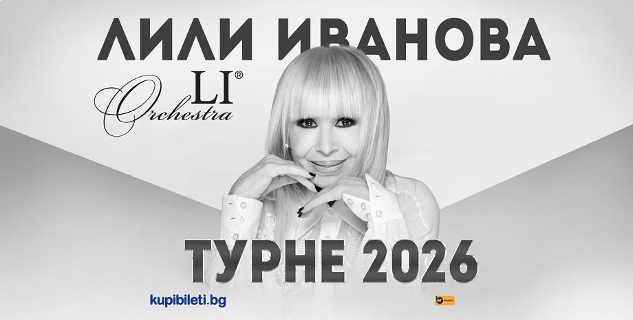

| 🎤 Изпълнител |
Тони Стораро |
| 📅 Дата |
13 ноември 2026 г., 20:00 ч. |
| 🏙️ Град |
София |
| 📍 Място |
зала "Арена 8888 София" |
| 🎫 Билет |
60 eur. |
|

| 🎤 Изпълнител |
Лили Иванова |
| 📍 Място |
1 ЮЛИ – ДОБРИЧ, ЛЕТЕН ТЕАТЪР
2 ЮЛИ – РУСE, ЛЕТЕН ТЕАТЪР
10 ЮЛИ - ГОРНА ОРЯХОВИЦА, ЛЕТЕН ТЕАТЪР
11 ЮЛИ – ВАРНА, ЛЕТЕН ТЕАТЪР
12 ЮЛИ – БУРГАС, ЛЕТЕН ТЕАТЪР
7 СЕПТЕМВРИ – ПЛОВДИВ, АНТИЧЕН ТЕАТЪР
10 СЕПТЕМВРИ – ПЛЕВЕН, ЛЕТЕН ТЕАТЪР
22 ОКТОМВРИ – ШУМЕН, СПОРТНА ЗАЛА „АРЕНА“
16 НОЕМВРИ – ХАСКОВО, ЗАЛА „ДРУЖБА“
18 НОЕМВРИ – ПАЗАРДЖИК, СПОРТНА ЗАЛА „ВАСИЛ ЛЕВСКИ“
|
| 🎫 Билет |
165 eur. |
|